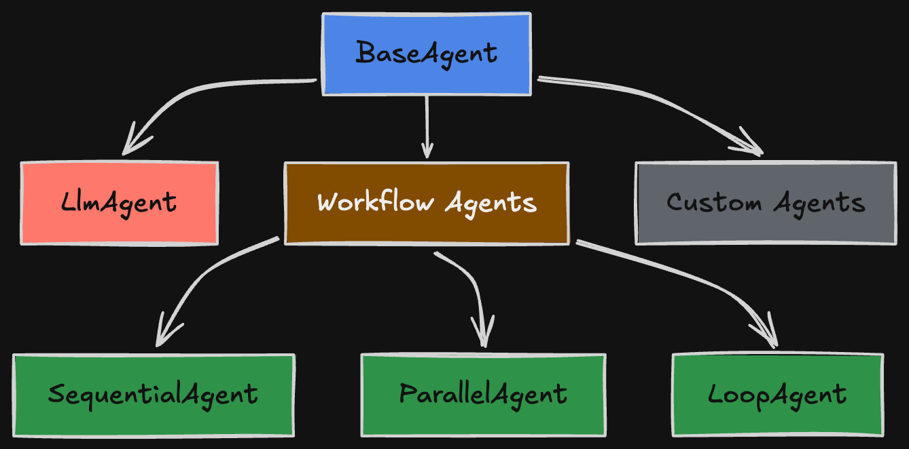
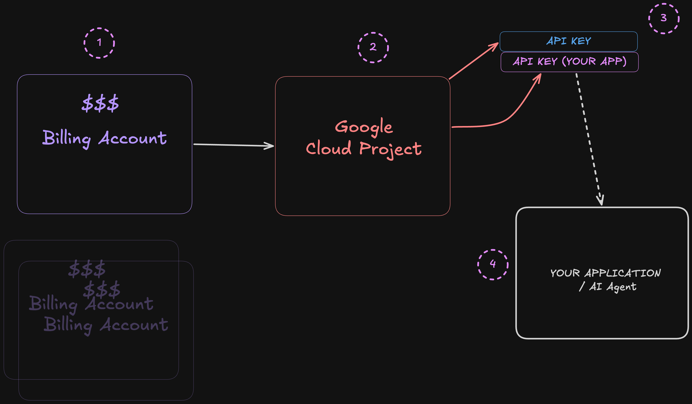
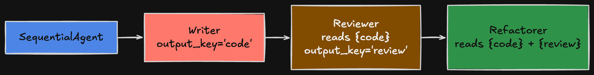
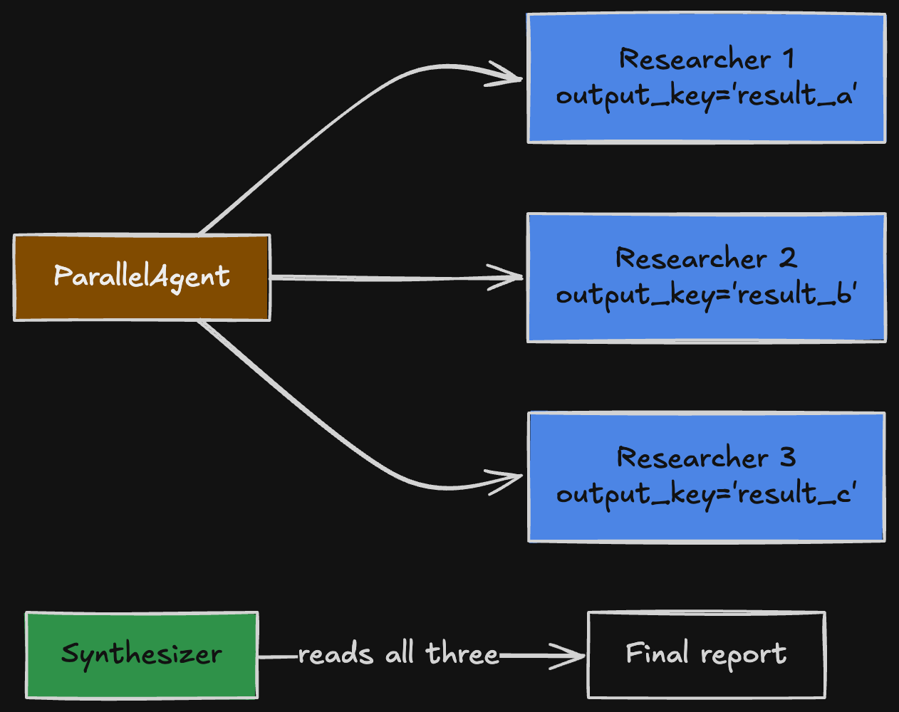
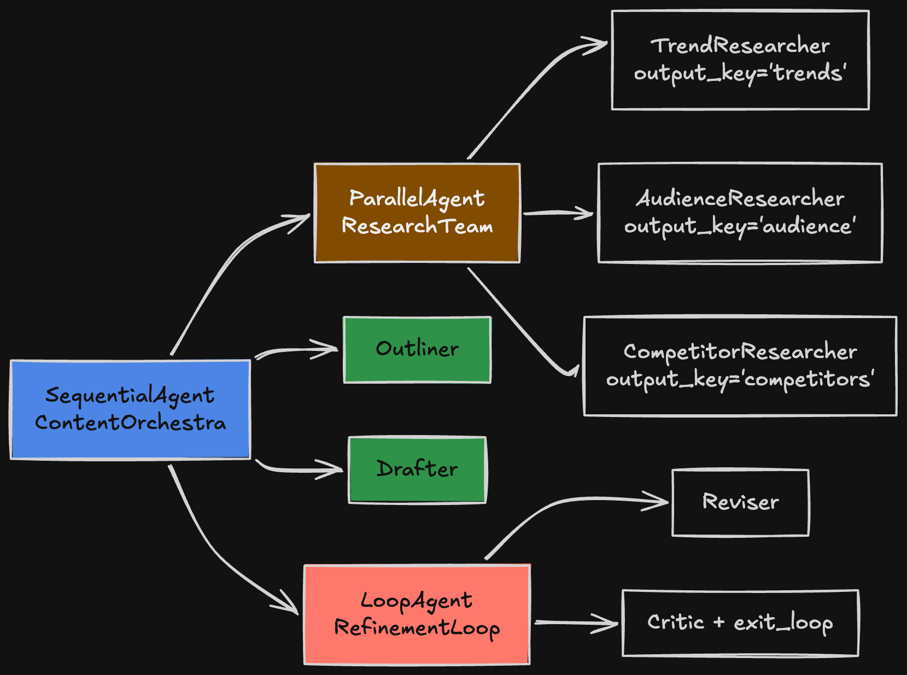

Build agents with Google ADK
A friendly, hands-on workshop. You will build five small agents — from a single helper to a full multi-agent pipeline.
What is ADK?
ADK (Agent Development Kit) is Google's open-source toolkit for building AI agents. An agent is a program that uses an LLM (like Gemini) to decide what to do — call tools, run code, chain steps — instead of you hard-coding every branch.
ADK gives you a few small building blocks. You compose them into anything from a single helper to an orchestra of agents working together.

What you will build
- A soloist — one agent with one custom tool (a weather lookup).
- An assembly line — three agents in a row: write code → review → refactor.
- A research team — three agents working in parallel, then a synthesizer.
- A loop — a writer and a critic iterating until the work is good.
- An MCP agent — an agent that talks to an external server using Model Context Protocol.
- The full orchestra — all of the above composed into one pipeline.
What you will learn
- How to define an agent and give it tools
- How agents pass data through session state
- The three workflow primitives:
SequentialAgent,ParallelAgent,LoopAgent - How to plug in external capabilities via MCP
If you can read Python and run a terminal command, you can do this workshop. We start very simple.
Getting set up
Five minutes of setup, then on to the fun part.
What you need
- A computer running macOS, Linux, or Windows (WSL recommended)
- Python 3.10 or newer
- A terminal you are comfortable in
- A code editor (VS Code, Cursor, anything you like)
- A free Google AI Studio API key — we'll get this in the next step
Clone the workshop repo
From your terminal, in a directory of your choice:
git clone https://github.com/AhsanAyaz/adk-orchestra-workshop.git
cd adk-orchestra-workshopEverything from here on assumes you are inside the adk-orchestra-workshop/ directory.
The project
You'll work inside the adk-orchestra-workshop/ folder. The agents are organized like this:
adk-orchestra-workshop/
├── single_agent/ # Step 4 — the soloist
├── sequential_pipeline/ # Step 5 — the assembly line
├── parallel_research/ # Step 6 — fan-out research
├── loop_refinement/ # Step 7 — writer vs. critic
├── content_orchestra/ # Step 9 — the full pipeline
├── setup.sh # One-shot setup script
├── requirements.txt # Python dependencies
└── .env.example # Template for your API keyEach folder is one agent. Each agent.py defines a root_agent object — that's the entry point ADK looks for.
Each agent.py ships with the real code commented out. At each step you'll uncomment the block (remove the # from every line) to bring the agent to life. Until you do, that agent shows up as a placeholder in the ADK UI that just says "I'm not built yet."
In VS Code: select the block and press Cmd-/ (Mac) or Ctrl-/ (Win/Linux) to toggle comments on a whole selection.
Prerequisites (Installation)
A few quick installs, then you're done with setup forever.
1. Get a Google AI API key
- Go to aistudio.google.com/apikey
- Sign in with a Google account
- Click Create API key and copy the value
The free tier is plenty for this workshop. No credit card needed.
How the pieces fit together

Four layers, in plain English:
- Billing account — where charges land. You can have one or many.
- Cloud project — a container for your work. Linked to a billing account.
- API key — issued inside a project. This is what your app sends with each request.
- Your application — uses the key to call Gemini.
2. Run the setup script
From your terminal, in the adk-orchestra-workshop/ directory:
./setup.shThe script does four things:
- Creates a Python virtual environment in
.venv/ - Installs ADK and its Python dependencies
- Creates your
.envfile from the template - Asks if you want to install Gemini CLI (for the bonus step) — say yes if you have
npm
Gemini CLI is Google's command-line coding assistant — like Claude Code or Cursor, but in your terminal. We use it in the bonus step to scaffold a frontend and FastAPI backend on top of your agents. Optional, but fun. Requires Node.js.
3. Add your API key
Open .env and paste your key:
# .env
GOOGLE_API_KEY="paste-your-key-here"4. Activate the environment
source .venv/bin/activateOn Windows: .venv\Scripts\activate
5. Start the ADK web UI
adk webOpen the URL it prints (usually http://localhost:8000). You should see a dropdown listing the five agents. Pick any one and try chatting with it. If that works — you're ready.
6. (Optional) Verify Gemini CLI
If you installed it above, check it's working:
gemini --version
# or just run:
geminiThe first run will ask you to authenticate. Sign in with the same Google account you used for the API key.
adk: command not found — your venv isn't active. Re-run source .venv/bin/activate.
401 error — your API key is wrong or missing from .env.
gemini: command not found — re-run ./setup.sh and say Y at the Gemini CLI prompt, or install manually: npm install -g @google/gemini-cli
Your first agent: single_agent
One agent, one tool. The smallest unit of ADK.
The idea
We'll make a weather assistant. The agent itself can't fetch weather — but we give it a tool (a regular Python function), and ADK lets the LLM call that function when it makes sense.
The code
Open single_agent/agent.py. You'll see the code below — but commented out. Uncomment the whole block (select all lines starting with # below the marker, then Cmd-/ or Ctrl-/) and save.
from google.adk.agents import LlmAgent
MODEL = "gemini-flash-latest"
def get_weather(city: str) -> dict:
"""Retrieves the current weather for a city.
Args:
city: The city name to look up.
Returns:
dict: status and result or error message.
"""
data = {
"stockholm": "Sunny, 22°C",
"tokyo": "Rainy, 20°C",
"paris": "Sunny, 21°C",
}
report = data.get(city.lower())
if report:
return {"status": "success", "report": report}
return {"status": "error", "error_message": f"No data for '{city}'."}
root_agent = LlmAgent(
name="SingleAgent",
model=MODEL,
description="A weather assistant.",
instruction=(
"You help users check the weather. "
"Always use the get_weather tool to look up conditions."
),
tools=[get_weather],
)What's happening
LlmAgent— the agent class. Needs a name, model, and instruction.tools=[get_weather]— we pass the function in. ADK reads the docstring to teach the LLM what the tool does.root_agent— the magic variable name ADK looks for. Every agent folder must have one.
The LLM only knows what your tool does by reading its docstring. A vague docstring → the model misuses the tool. Write them clearly.
Try it
- In the ADK web UI, pick single_agent from the dropdown.
- Type: What's the weather in Stockholm?
- Now try: What's the weather on Mars?
Watch the Events tab. You can see the moment the model decides to call get_weather, the arguments it sends, and the result.
Add your city
Add an entry to the data dict for your home city. Restart adk web and ask about it. Then add a second tool — maybe get_population(city) — and watch the agent pick the right one based on the question.
Chain agents: sequential_pipeline
Three agents in a row. The output of each becomes input for the next.

output_key; the next step reads it from session state.The big idea: session state
Agents pass data through a shared dictionary called session state. Two pieces wire it up:
| Pattern | What it does |
|---|---|
output_key="x" | Saves this agent's reply into state["x"] |
{x} in instruction | Reads state["x"] at runtime |
The code
Open sequential_pipeline/agent.py and uncomment the block below the marker. Code (what you'll get once uncommented):
writer = LlmAgent(
name="CodeWriter",
model=MODEL,
instruction="Write a clean Python implementation. Output only code.",
output_key="generated_code", # ← writes here
)
reviewer = LlmAgent(
name="CodeReviewer",
model=MODEL,
instruction=(
"Review this Python code:\n"
"```python\n{generated_code}\n```\n\n" # ← reads here
"List bugs and quality issues."
),
output_key="review_comments",
)
refactorer = LlmAgent(
name="CodeRefactorer",
model=MODEL,
instruction=(
"Refactor this code:\n{generated_code}\n\n"
"Apply this feedback:\n{review_comments}"
),
output_key="refactored_code",
)
root_agent = SequentialAgent(
name="CodePipeline",
sub_agents=[writer, reviewer, refactorer],
)Try it
- Pick sequential_pipeline in the UI.
- Ask: Write a function that checks if a number is prime.
- Open the State tab on the right.
- Watch
generated_code, thenreview_comments, thenrefactored_codefill in — one by one.
Each agent has one job. Writing the prompt is easier. Debugging is easier. And you can swap any step out without touching the others.
Add a fourth step
Add a DocWriter agent that reads refactored_code and writes a one-paragraph explanation of what the function does. Save its output to state["explanation"]. Add it to sub_agents. Restart and test.
Parallel agents: parallel_research
Three researchers run at the same time. A synthesizer combines their answers.

output_key, then synthesize.Why parallel?
If three lookups don't depend on each other, running them in parallel is dramatically faster than running them in sequence. ParallelAgent kicks them all off, waits for all to finish, then moves on.
The code (shortened)
Open parallel_research/agent.py and uncomment the full block below the marker. The shortened version below shows the shape:
from google.adk.agents import LlmAgent, ParallelAgent, SequentialAgent
from google.adk.tools import google_search
renewable = LlmAgent(
name="RenewableResearcher", model=MODEL,
instruction="Research recent renewable energy developments.",
tools=[google_search],
output_key="renewable_result", # ← UNIQUE key
)
ev = LlmAgent(
name="EVResearcher", model=MODEL,
instruction="Research EV technology advances.",
tools=[google_search],
output_key="ev_result",
)
carbon = LlmAgent(
name="CarbonResearcher", model=MODEL,
instruction="Research carbon capture methods.",
tools=[google_search],
output_key="carbon_result",
)
team = ParallelAgent(name="ResearchTeam", sub_agents=[renewable, ev, carbon])
synthesizer = LlmAgent(
name="Synthesizer", model=MODEL,
instruction=(
"Combine into one report:\n"
"Renewable: {renewable_result}\n"
"EVs: {ev_result}\n"
"Carbon: {carbon_result}"
),
)
# Run team in parallel, THEN run synthesizer:
root_agent = SequentialAgent(
name="ResearchAndSynthesize",
sub_agents=[team, synthesizer],
)Two rules you must know
If two parallel agents use the same output_key, they will silently overwrite each other. Whoever finishes last wins. Always give each branch a different key.
google_search is soloAn agent that uses google_search can't have any other tools. It's a Gemini built-in grounding tool, not a regular function call. Just describe the research task — grounding activates automatically.
Try it
- Pick parallel_research.
- Ask: Research the future of renewable energy.
- Open the Events tab. You'll see events from all three researchers interleaving — that's parallelism live.
Pick your own topic
Change the three researchers to investigate something you care about (recipe ideas, travel destinations, programming languages). Remember to update the synthesizer's instruction to use the new output_key names.
Loop until good: loop_refinement
A writer drafts. A critic reviews. They repeat until the critic says "ship it."
How the loop exits
An LoopAgent needs a way to stop. We give the critic a special tool, exit_loop, that flips a flag on the agent's context. ADK sees the flag and breaks out of the loop.
The code
Open loop_refinement/agent.py and uncomment the full block below the marker:
from google.adk.agents import LlmAgent, LoopAgent
from google.adk.tools.tool_context import ToolContext
def exit_loop(tool_context: ToolContext) -> dict:
"""Call this tool ONLY when the document is publish-ready."""
tool_context.actions.escalate = True # breaks the loop
return {}
writer = LlmAgent(
name="Writer", model=MODEL,
instruction=(
"Current document:\n{current_doc?}\n\n" # ← '?' = optional
"Critic feedback:\n{critique?}\n\n"
"If first pass, write a draft. If critique, revise."
),
output_key="current_doc",
)
critic = LlmAgent(
name="Critic", model=MODEL,
instruction=(
"Review:\n{current_doc}\n\n"
"If publish-ready, call exit_loop. "
"Otherwise list 2-3 specific improvements."
),
tools=[exit_loop],
output_key="critique",
)
root_agent = LoopAgent(
name="RefinementLoop",
max_iterations=5, # ← safety net
sub_agents=[writer, critic],
)Two patterns worth remembering
{key?}— the question mark means "optional." On the first loop pass,current_docandcritiquedon't exist yet. The?tells ADK to substitute an empty string instead of crashing.max_iterations— non-negotiable. Without it, a stubborn critic can loop forever, racking up API costs. Always set a ceiling.
Loops can be expensive. Each iteration is two LLM calls. Start with max_iterations=3 while developing — bump it up only when you trust the exit logic.
Try it
- Pick loop_refinement.
- Ask: Write a short blog post about why Python is great for beginners.
- Open the State tab. Watch
current_docandcritiquechange on each pass. The loop stops when the critic callsexit_loop.
Tougher critic
Edit the critic's instruction to be much pickier — e.g. "Demand specific examples, vivid verbs, and zero passive voice." See how many iterations it takes now. Did it hit max_iterations=5 without exiting? Bump it to 8 and try again.
Connect to an MCP server
So far, every tool has been a local Python function. Now we'll connect to an external tool server using the Model Context Protocol.
What is MCP?
Model Context Protocol is an open standard for connecting LLMs to external tools and data sources. Think of it like USB-C for AI: any MCP-compatible client (ADK, Claude, Cursor) can plug into any MCP-compatible server (file systems, GitHub, Airbnb search, your own).
The win: you don't have to re-write the integration for every framework. Build the server once, plug it in everywhere.
We'll connect to the public Airbnb MCP server — it lets your agent search real listings. Runs locally via npx, no signup needed.
Step 1 — install Node.js (if you don't have it)
Check if you already have it:
node --version
npx --versionIf either errors out, install Node from nodejs.org (LTS version is fine).
Step 2 — create a new agent folder
From the adk-orchestra/ root:
mkdir mcp_travel
touch mcp_travel/__init__.py mcp_travel/agent.pyNow open mcp_travel/__init__.py and add one line so ADK picks it up:
from .agent import root_agentStep 3 — write the agent
Open mcp_travel/agent.py and paste:
"""
MCP demo — agent that uses an external Airbnb search server.
"""
from google.adk.agents import LlmAgent
from google.adk.tools.mcp_tool.mcp_toolset import MCPToolset
from google.adk.tools.mcp_tool.mcp_session_manager import StdioConnectionParams
from mcp import StdioServerParameters
MODEL = "gemini-flash-latest"
# Configure the Airbnb MCP server (runs locally via npx)
airbnb_mcp = MCPToolset(
connection_params=StdioConnectionParams(
server_params=StdioServerParameters(
command="npx",
args=["-y", "@openbnb/mcp-server-airbnb", "--ignore-robots-txt"],
),
timeout=30, # seconds — Airbnb can be slow
),
)
root_agent = LlmAgent(
name="MCPTravel",
model=MODEL,
description="Finds Airbnb listings using a real MCP server.",
instruction=(
"You are a friendly travel assistant. "
"Use the Airbnb tools to search listings when the user asks. "
"Present results as a clean markdown list with name, price, and rating."
),
tools=[airbnb_mcp],
)Step 4 — run it
Restart the ADK web UI:
# Ctrl-C to stop, then:
adk webPick mcp_travel from the dropdown. Try:
- Find me 3 Airbnbs in Lisbon under $100/night
- Show me places in Paris near the Louvre
What's happening behind the scenes
- ADK starts the MCP server as a subprocess (the
npxcommand). - It asks the server "what tools do you have?" — the server replies with a list (e.g.
airbnb_search,airbnb_listing_details). - Those tools get added to your agent's toolset automatically.
- When the LLM decides to call one, ADK forwards the call to the server over stdio, gets the result, and feeds it back to the model.
Timeout: bump timeout=30 higher (try 60).
robots.txt error: ensure --ignore-robots-txt is in the args (it is, above).
npx not found: install Node.js, then restart your terminal.
Add a second MCP server
The official MCP server registry has dozens of public servers — filesystem, fetch, sqlite, GitHub, time, weather, and more.
Add the time server alongside Airbnb so your agent can answer "What time is it in Tokyo when checkout is 11am local?" Just create a second MCPToolset and put both in tools=[airbnb_mcp, time_mcp].
Put it all together: content_orchestra
Now we compose everything you've learned into one pipeline that produces a polished article from a single topic.
The architecture

SequentialAgent (root)
├── 1. ResearchTeam # Sequential — trends, audience, competitors
├── 2. Outliner # Reads research, builds outline
├── 3. Drafter # Reads outline, writes first draft
└── 4. RefinementLoop # LoopAgent — Reviser ↔ Critic (max 3)Three primitives, one pipeline:
SequentialAgentwraps the whole thing- Each step is itself another
SequentialAgentorLoopAgent - Data flows through session state — exactly the same keys you've seen before
The trick: nest workflow agents
The "magic" here isn't magic at all. SequentialAgent, ParallelAgent, and LoopAgent are all just agents. So you can put them inside each other:
root_agent = SequentialAgent(
name="ContentOrchestra",
sub_agents=[
research_team, # a SequentialAgent
outliner, # an LlmAgent
drafter, # an LlmAgent
refinement_loop, # a LoopAgent
],
)Open content_orchestra/agent.py and uncomment the full block below the marker. Read it top to bottom — everything in there should now look familiar. It's just the previous four steps stitched together.
Try it
- Pick content_orchestra.
- Ask: AI developer tools in 2026
- Open the State tab and watch all the keys fill in order:
trends→audience→competitors→outline→draft→critique→draft(revised) …
Every multi-agent system you'll build is some combination of these three primitives plus state. That's it. You now have the full toolkit.
Build a UI & backend with Gemini CLI
You have agents. Now wrap them in a web app — without writing the boilerplate yourself. Gemini CLI does the typing.
What is Gemini CLI?
Gemini CLI is Google's open-source command-line coding assistant. You point it at a folder, type what you want in plain English, and it reads/writes files, runs commands, and edits code. Think of it as a pair programmer that lives in your terminal.
For this bonus step we'll use it to scaffold:
- A FastAPI backend that exposes your ADK agents over HTTP
- A simple HTML/JS frontend that talks to that backend
ADK is the runtime — it runs your agents. Gemini CLI is the builder — it writes the code around them. ADK is what your app uses in production. Gemini CLI is the assistant you use while developing.
Step 1 — Start Gemini CLI
From the workshop folder:
cd path-to-project/adk-orchestra-workshop
geminiThe first time you run it, Gemini CLI asks you to sign in. Use the same Google account as your API key. After that, you're inside an interactive session.
Run Gemini CLI from the project root so it has read access to all the agent folders. It will read single_agent/agent.py, content_orchestra/agent.py, etc., to understand how your agents work.
Step 2 — Ask it to build a FastAPI backend
Paste this prompt into Gemini CLI:
# Prompt to paste:
Build a FastAPI backend in a new file called backend/main.py.
Requirements:
- One POST endpoint: /chat/{agent_name}
- Accept JSON: {"message": "..."}
- Load the matching agent from this project (single_agent,
sequential_pipeline, parallel_research, loop_refinement,
content_orchestra) using ADK's Runner API.
- Return the agent's final response as JSON: {"reply": "..."}
- Enable CORS so a local frontend can hit it.
- Also create backend/requirements.txt with fastapi, uvicorn[standard].
- Show me how to run it.Gemini CLI will:
- Read your existing agents to learn their structure
- Create
backend/main.pyandbackend/requirements.txt - Tell you the exact
uvicorncommand to start the server
Review the diff it shows. Approve it. Then run the install + start commands it gave you.
Step 3 — Ask it to build a frontend
Once the backend is up, prompt Gemini CLI again:
# Prompt to paste:
Now build a minimal frontend in frontend/index.html:
- Single page, vanilla JS, no framework
- A dropdown to pick the agent (single_agent, sequential_pipeline,
parallel_research, loop_refinement, content_orchestra)
- A textarea for the user message
- A Send button that POSTs to http://localhost:8000/chat/{agent}
- Show the reply below in a styled message bubble
- Clean, simple design — neutral colors, system font, generous paddingOpen the resulting HTML file in your browser. Pick an agent, send a message — you just built a full-stack agent app.
Step 4 — Iterate
This is where vibe-coding shines. Try follow-up prompts like:
- "Stream the response token-by-token instead of waiting for the full reply."
- "Add a sidebar that shows the contents of session state in real time."
- "Make it look like Notion."
- "Add a button that resets the conversation."
- "Deploy this to Cloud Run with a Dockerfile."
Build something real
Pick one of these mini-projects and build it with Gemini CLI on top of your ADK agents:
- Travel planner UI — wrap the
mcp_travelagent in a search interface with date pickers and price filters. - Code review dashboard — paste in a Python snippet, run
sequential_pipeline, show the writer/reviewer/refactorer outputs side by side. - Research report generator — give
content_orchestraa topic and render the resulting article as styled markdown with a "regenerate section" button.
The whole point: you don't need to know FastAPI or HTML/CSS by heart. You direct, Gemini CLI types. Review carefully, run often, ship.
Gemini CLI will sometimes write code that doesn't quite work. Always run what it produces and read the diffs. When something breaks, paste the error back in — it'll fix it.
Next steps
You've built five agents and learned every workflow primitive ADK offers. Here's where to go from here.
Keep building
- Replace the LLM tools with real APIs — actual weather, real code execution, your company's internal tools.
- Add memory. ADK supports session memory across conversations. Try storing user preferences and recalling them next time.
- Deploy it. ADK agents can ship to Cloud Run or anywhere Python runs.
Read more
| Resource | Why |
|---|---|
| Official ADK docs | Full API reference, advanced patterns |
| adk-python on GitHub | Source code, issues, examples |
| adk-samples | Production-grade sample agents |
| modelcontextprotocol.io | Build your own MCP servers |
One last thing
Agent development is mostly prompt engineering plus plumbing. The plumbing (everything you learned today) is the easy part. The prompts are where the craft lives.
So: build something. Ship it. Iterate. The fastest way to get good is to use what you've built and notice where it breaks.
If you build something neat, share it. The agent community is small, friendly, and hungry for examples.